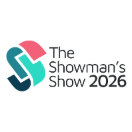
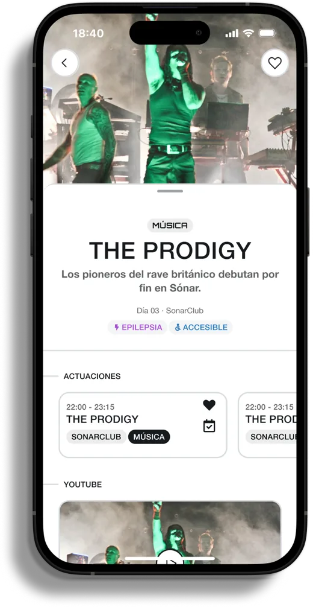
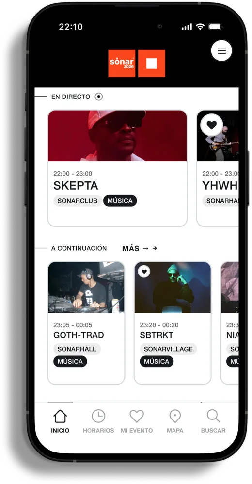
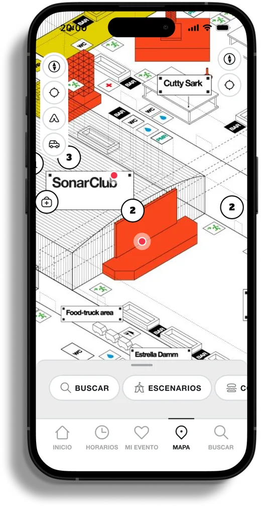
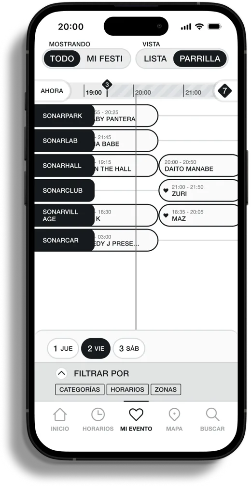
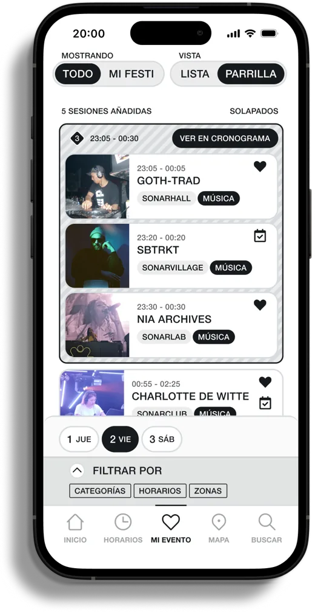
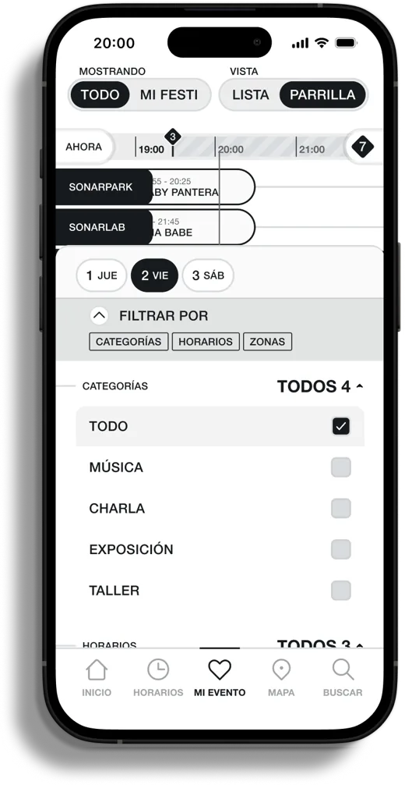

Ya confían en VIKIN
Festivales reales, apps reales.
Esto no es una demo. Estos eventos ya tienen su app oficial hecha con VIKIN, cada una con su propia identidad.

Una app oficial con la marca de Sónar que junta Día, Noche y Sónar+D en un solo sitio, que funciona sin conexión dentro de los pabellones de la Fira y que convierte a vuestros partners en una nueva vía de ingresos.




VIKIN es una solución white-label nacida en Reino Unido. Le damos al organizador una app completa y con su marca, sin el coste ni el lío de construirla desde cero.
Trabajamos con festivales como Greenbelt, The Big Retreat, Shambala o Teddy Rocks. Somos una empresa de desarrollo: lo que nos piden los clientes lo construimos, y cada mejora llega al resto de apps.
Esto no es una demo. Estos eventos ya tienen su app oficial hecha con VIKIN, cada una con su propia identidad.

Dentro de los pabellones, con miles de móviles a la vez, la cobertura cae. La app sigue enseñando horarios, mapa y fichas cuando Instagram ya no carga.
No hace falta registrarse y no recogemos datos personales. La analítica que veis es siempre agregada y anónima.
Sónar cambia de imagen en cada edición. La app también: misma base, nueva piel, sin rehacerla. Como veis en los diseños, no es una plantilla.
Un cambio de horario en el SonarClub, una sesión sorpresa o un aviso de accesos. Llega al momento a quien tiene la app, sin depender del algoritmo.
El inicio cambia según la hora: quién está tocando ahora, quién va después y qué charla empieza en Sónar+D.
Nos conectamos a vuestros datos y herramientas, sin duplicar trabajo. La web y la app pueden tirar de la misma información.
En 2026 Sónar estrenó formato: Día, Noche y Sónar+D juntos por primera vez en la Fira Gran Via. Más gente moviéndose a la vez entre conciertos, charlas, exposiciones y talleres. Justo ahí es donde una app oficial marca la diferencia.
SonarClub, SonarHall, SonarVillage, SonarLab, SonarPark, SonarCar y todo Sónar+D en los mismos pabellones. Saber dónde está cada cosa y cómo llegar, sin cobertura, lo cambia todo.
Filtros por música, charla, exposición y taller. Quien viene por Sónar+D monta su agenda de ponencias al lado de sus sets favoritos, con aviso cuando se solapan.
Gente de todo el mundo que vive pegada al móvil y no siempre tiene datos. La app se entrega en castellano e inglés y funciona sin roaming.
Estrella Damm, Cutty Sark, Fritz-Kola, Grey Goose… Sónar ya trabaja con marcas potentes. La app multiplica el valor de esos acuerdos (lo vemos en el punto 03).
Esto es lo que hemos diseñado para Sónar: una app que cambia según la hora y el sitio, para que cada persona vea lo que le importa en cada momento.


Cada marca sale donde el asistente mira de verdad: en el mapa, en el inicio, en la parrilla y en la agenda de Sónar+D. Durante los tres días y también el resto del año.
Espacios de marca en la pantalla que más se abre durante el festival.
Barras, zonas y activaciones con hora y ubicación, como ya pasa con Estrella Damm o Cutty Sark.
Charlas, talleres o expos presentados por un partner, dentro de la agenda que consulta un público profesional.
Impactos y clics agregados para enseñar a cada marca lo que ha conseguido y cerrar la edición siguiente.
Marcas que ya están en Sónar
Horarios, mapa, agenda y fichas funcionan descargados. Las actualizaciones llegan gastando poca batería y pocos datos, algo clave en jornadas que van de mediodía a la madrugada.
Se entra sin crear cuenta. Menos fricción para descargarla y cero dolores de cabeza con datos personales.
Lo que publicáis llega a quien tiene la app, sin que una red social decida quién lo ve.
SonarMix, galerías, vídeos de las actuaciones y noticias, con enlace a Spotify o YouTube. Comunidad sin depender del alcance de redes.
Las fechas de 2028, los primeros nombres o las novedades de Sónar+D, directos a quien ya tiene la app instalada: vuestro público más fiel.
La misma plataforma puede servir para Sónar Week o las ediciones de Sónar en otras ciudades, cada una con su piel y aprovechando todo lo construido.
VIKIN no es una app cerrada. Nos conectamos a vuestro sistema de datos para no duplicar trabajo: la programación se carga una vez y sirve para la app y para la web. También trabajamos con plataformas de gestión de eventos como Crescat (ya activo con Greenbelt). La venta de entradas sigue con vuestros partners de siempre; nosotros la enlazamos desde la app.
“Ha sido un auténtico placer trabajar con VIKIN en la app de Greenbelt 2025. Su dedicación, creatividad y rapidez de respuesta ha sido inmejorable. Ese compromiso con la excelencia se nota en el resultado final.”
Daisy Ghira · Greenbelt Festival
“Ya habíamos usado apps para eventos en The Big Retreat, pero VIKIN superó nuestras expectativas. Una experiencia fluida tanto para la organización como para los asistentes. Los recomendamos totalmente.”
Amber Lort-Phillips · The Big Retreat
Partimos de estas pantallas y las ajustamos con vuestro equipo a la imagen de la edición 2027.
Conectamos programación, mapa y servicios. En paralelo, cerramos qué espacios de la app entran en los paquetes de partners.
Pruebas y publicación en iOS y Android con margen, a tiempo para anunciarla junto al cartel.
Soporte durante el festival y contenido, notificaciones y preventas el resto del año.
2027 ya está en marcha y los acuerdos con partners se cierran pronto. Es buen momento para verlo: en una llamada de 30 minutos os enseñamos la app de Sónar funcionando y cómo encaja en vuestros paquetes con marcas.
Escríbenos a david@vikin.events
Las pantallas de app de esta propuesta son ejemplos ilustrativos con la marca de Sónar, no un diseño definitivo. Las funciones descritas reflejan la plataforma VIKIN; la configuración y el diseño finales se adaptan a las necesidades de Sónar. Fechas, escenarios, marcas y cifras según información pública de Sónar y prensa. Los testimonios corresponden a clientes reales de VIKIN.